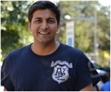
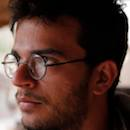
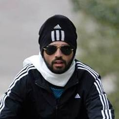
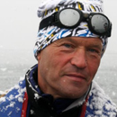
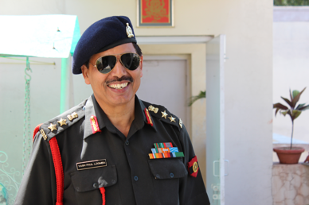

The Himalayas have always been the force inspiring and guiding humanity ahead. Right from the early Gods of Hinduism, to many great Buddhist saints, and recently the greatest idols of the Music and Technology world like the Beatles and Steve Jobs, all have drawn from these mountains a great deal of what they later gave back to the world .The purpose of this expedition is to have the Holistic Himalayan Experience, stretching across pure adventure and cultural connect with the local communities to setting up sustainable energy and education based infrastructure in these remote regions. We don’t see ourselves in the field of running expeditions; we see ourselves as facilitators, whose job is to create a fertile environment for future growth and collaborations, for both the participants and the hosts. Dubbed as the Adventure Pilgrimage, we just try to get you to the mountains, and let the peaks inspire you.
Our Philosophy

Team

Paras Loomba
Paras Loomba, son of an Army officer, is the Founder of the Global Himalayan Expedition. After a successful International Antarctica Expedition in 2012, led by Robert Swan, Paras quit his corporate job to work in the field of renewable energy and sustainable rural development. Passionate about cutting edge technologies and their role in driving change in business and communities, Paras is actively involved in providing solar based electrification to rural India. If not traveling across the incredible India, Paras, in his free time can be found motivating youngsters on the fruits of social entrepreneurship or sharing his challenges & experiences with the alike. An avid multi-sports player, Paras is the force driving Global Himalayan Expedition’s focus on providing energy and education access to the remote Himalayan Communities.

Chanakya Bhardwaj
Chanakya is an engineer by profession and a vocational theatre artist by interest. His free time is generally spent trying to pursue his interest in motor-cycles, poetry and pencil-portraits. His first steps in Leh-Ladakh were in 2011 when he covered the entire valley on his motor-bike with a couple of friends. Ever since, he has been dying to go back and it seems the time has come now.

Jaideep Bansal
Jaideep is an Operations Manager by profession and a musician /adventure junkie by love . When not streamlining operations at P&G , he is found either composing music or running marathons/cycling expeditions and raising funds for Non-Profits. He is amongst the top 200 Marathon runners of India.
As a member of the Global Shapers Chandigarh Hub, he is motivated towards making a positive impact in the community.
The GHE 1.0 was a transforming experience for him, and inspired by the individuals he met, he decided to get involved with the work Paras is leading.
As a member of the Global Shapers Chandigarh Hub, he is motivated towards making a positive impact in the community.
The GHE 1.0 was a transforming experience for him, and inspired by the individuals he met, he decided to get involved with the work Paras is leading.
Sonal Asgotraa
A technology analyst by profession, Sonal Asgotraa is an ardent explorer, on a ceaseless quest for new experiences and adventures. She was selected to participate in the 2013 International Antarctic Expedition led by Sir Robert Swan. Serving as the Young Professional Ambassador for Teach for India and a Writer for Youth Leader Magazine, Indian edition, Sonal is extremely passionate in helping to make the world around her, a better place . Her ultimate fantasy is to see the earth twirling from space, shimmering in all its beauty and she hopes to make it there someday!
Varun Loomba
Varun is a traveler by heart, consultant by profession, and aviation enthusiast by love. Penchant for trying all things that is life, he has lived in or traveled to almost every state in India, visited 15 countries, ran marathons, including the prestigious Boston marathon, and if not for providing advisory services to clients, he is busy leading the pen pal exchange program between students in Kashmir and those in in USA. An avid sportsman and adventurer, he works as a part-time UN volunteer helping to find innovative solutions to serve education needs in rural areas of the world.
Advisors

Robert Swan, O.B.E.
Robert Swan, OBE is one of the world’s preeminent polar explorers and environmental leaders. By age 33, Swan became the first person to walk to both the North and South Poles, earning his place in history alongside the great explorers and adventurers. Swan’s experiences of the effects of global warming at both Poles only helped to shape and focus his lifetime goal: working towards the preservation of Antarctica as the last great wilderness on earth. In 1992,Robert Swan, OBE was the Keynote Speaker at the first ‘World Summit for Sustainable Development’ held in Rio de Janeiro. In March 2008, Robert Swan, OBE made Antarctic history again by living solely on renewable energy at the E-Base for over two weeks. Successful in the world’s harshest climate, the positive message Swan sent to the world was “This is possible in Antarctica, and surely it is possible in the ‘real world’!”. Swan’s contribution to education and the environment has been recognized on an international scale, seen through his appointment as United Nations Goodwill Ambassador for Youth and Special Envoy to the Director General of UNESCO. He was awarded the high distinction of OBE, Officer of the Order of the British Empire, as well as the Polar Medal by Her Majesty the Queen. Swan’s real-life discussion of leadership, trust and working together never ceases to thrill, uplift and stimulate crowds, drawing standing ovations throughout the globe

Col. Y.P. Loomba
Col. Loomba is a veteran Army Officer. Retired as a Colonel after putting 35 years of service in the Indian army, he has traveled to every remote corner of the country possible. Commissioned in 1976 in the Supply & Logistic Corps of the Indian army, he had held various commands during his tenure. From commanding a unit of Black Cat Commandos of the Elite National Security Guards (NSG), to heading tank transporter battalion in the desert of Rajasthan, to commanding troops in the high altitudes of the Himalayas at China border, the Colonel has seen adventure in true sense. He was the light weight boxing champion at the Indian Military Academy and is an avid swimmer, cross country runner and a Golfer. He maintains his passion for travel and adventure and continues to support social impact initiatives in remote rural communities